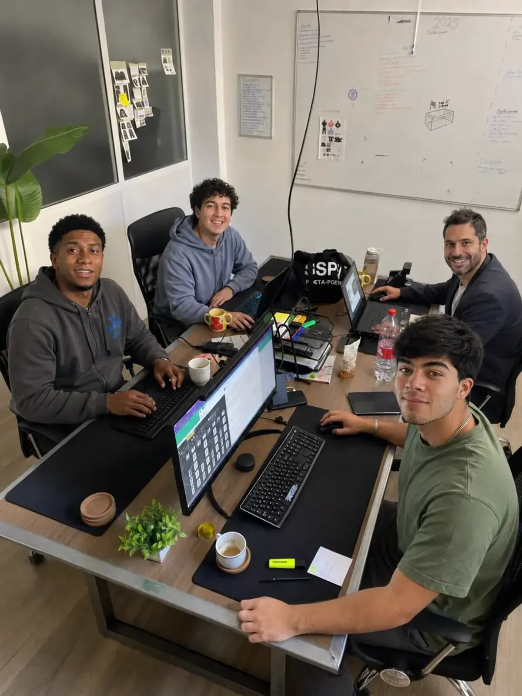

Neo-grotesca
Panzas casi ovaladas, a de dos pisos, remates horizontales. Neutra para que el cóndor sea el protagonista.
Guion visual · Octubre 2026
La identidad de condor.ai entera y funcionando: el cóndor de siempre redibujado, un material propio —el acrílico—, una marca que se mueve y un kit listo para construir.
Mueve el puntero: la placa de acrílico se inclina con la luz.
I · Identidad · El cóndor
No cambiamos de pájaro. Usamos el logo original como calco, leímos sus puntos y lo reconstruimos en vector, con curvas reales y esquinas redondeadas con precisión.
Cuello llenoEl cuerpo acompaña al ala hasta la cabeza: el cuello es ancho y firme y la cabeza se lee entera.
Un corteUn tajo fino que sigue la curva del ala separa ala y cuerpo de punta a punta. Por eso el ala se puede animar sola.
Plumas romasPuntas, cola y espolón con el mismo radio: firme de lejos, suave de cerca.
I · Identidad · Logo
El cóndor mide 1,8 veces el alto de x y se separa del nombre 0,34 alto de x. Negro sobre blanco por defecto; el azul se reserva para momentos de marca.


Ícono de app. Squircle continuo, como los íconos de Apple. Cóndor al 66 % del ancho.
110 px Horizontal en pantalla · 28 mm impreso
 20 px Isotipo. Más chico, el ícono de app.
20 px Isotipo. Más chico, el ícono de app.
I · Identidad · Letras
Inter Display Semibold, la alternativa abierta más cercana a SF Pro Display, pasada a vector propio: no depende de tener la fuente y cada letra es una pieza animable.
Panzas casi ovaladas, a de dos pisos, remates horizontales. Neutra para que el cóndor sea el protagonista.
Espaciado ajustado para tamaños grandes, con aire extra entre la r y el punto para que no se toquen en chico.
Inter es SIL OFL 1.1: se puede modificar y usar en un logo. SF Pro no: es solo para interfaces de Apple.
I · Identidad · Productos
Baldosa en el color del producto, dos láminas de acrílico en abanico, un resplandor y un glifo blanco que dice qué hace. El color de producto vive solo dentro de su ícono. Pasa el puntero: el ícono se inclina con la luz.
II · Material · Acrílico
Una lámina lechosa y esmerilada con cuerpo: desenfoca lo que hay detrás, lo tiñe de blanco, tiene una superficie con textura y un canto pulido que atrapa la luz. Arrastra la lámina, elige la textura y mueve sus parámetros.

Textura · se aplica a todo el guion
Forma
Detrás
data-acrilico): barras, docks, botones secundarios, tarjetas que flotan.data-denso): menús, toasts, hojas y diálogos, donde hay texto encima.<html data-textura="grano">). Sobre contenido quieto, nunca detrás de texto largo.<div data-acrilico data-radio="pildora">…</div>
import { montarAcrilicos } from "./src/kit/acrilico.js";II · Material · Superficies
El mismo material en cuatro piezas, según cuánto flota cada una. Todo sobre blanco: el acrílico se nota por su esmerilado, su textura y su canto, no por colores de fondo.
Lámina
Resumen del día3 pedidos nuevos · 1 reuniónIII · Marca en movimiento · Firmas
Una sola animación compleja por pantalla: estas son las del logo. Propuesta, por confirmar: Aleteo en la carga, Enfoque en video, Destello en esperas.
III · Marca en movimiento · La carga
Nunca un spinner genérico. El cóndor se arma al entrar, planea mientras espera, se llena con el progreso y termina en un check.
III · Marca en movimiento · Vuelo con scroll
III · Marca en movimiento · Momentos
Buenos días. Tienes 3 pedidos nuevos.
Toca el ícono: crece desde su lugar a una ventana de acrílico. Así se abre la app.
El texto gira lento alrededor del cóndor. Para cierres, stickers y el pie del sitio.
El cóndor sube y baja con calma: la espera sin duración conocida.
Al bajar, el nombre se recoge y queda el cóndor. Míralo arriba en esta misma página.
IV · Fundamentos · Color
Los fondos son siempre blancos o grises muy claros. El azul aparece poco y por eso se nota: la acción principal, lo activo y el foco. Toca un color para copiarlo.
IV · Fundamentos · Tipografía
Tecnología del futuro.
Desde los Andes.
Título de tarjeta · Inter Display 28
Bajada en Inter 21. Una o dos líneas, nunca un párrafo.
Texto corrido en Inter 17: el tamaño base del sitio, cómodo para leer en cualquier pantalla.
Rótulo · Geist Mono 12
IV · Fundamentos · Forma y curvas
cubic-bezier(.16, 1, .3, 1)Lo que entra en pantalla.
cubic-bezier(.25, .1, .25, 1)Cambios de estado.
muelle amortiguado · ζ 0,62Lo que se toca.
V · Kit · Botones
Variantes
Estados en capas · tócalo
Tamaños e íconos
Botón de ícono · con etiqueta
data-estados, el botón cruza quieto → cargando → listo sin cambiar de tamaño.aria-label y tooltip; su área táctil es de 44 px.<button class="btn primario" data-estados data-listo="Enviado">Enviar</button>V · Kit · Controles
Segmentado · la lente viaja
Interruptor · aplica al instante
Deslizador · valor a la vista
Contador · con topes
Casillas y opciones
V · Kit · Carga y estados
Insignias · ícono + texto
Progreso
Esqueleto · imita lo que viene
Cuando alguien compre en tu tienda, aparece aquí.
V · Kit · Avisos
Toast · confirma lo que hiciste
Máximo 3, en abanico al pasar el puntero; con el puntero encima no se van.Alerta · crece desde su botón
Foco en Cancelar, Escape cierra, Tab atrapado, el foco vuelve aquí.Banner · un estado que dura
V · Kit · Menús y popups
Menú · flechas, inicial, Escape
Popover · información al lado
Tienda online administrada por $54.990 al mes, IVA incluido, más 6,7 % por venta. La comisión incluye la gestión de anuncios.
Ver el producto →Tooltip · al pasar o con foco
Modal y hoja
La hoja se arrastra y se queda en media o completa.Comparte el acceso a condor track. Cada persona recibe un correo para entrar.
Datos de ejemplo.
VI · Formularios · Campos
La etiqueta flota, el error aparece al salir del campo y dice cómo arreglarlo. El RUT se formatea y se valida; el correo te sugiere el dominio si hay un error de tipeo.
Código de verificación
Avanza solo y acepta pegar el código completo.Archivos
Fichas de opción · varias
VI · Formularios · Stepper
El caso real del sitio. Cada paso valida antes de avanzar, la línea se llena y los pasos hechos se pueden reabrir. Es una demostración: no se envía nada.
VII · Patrones · Scrollers
Carrusel · arrastra, usa las flechas o el teclado
 Tu tienda en 7 días
Tu tienda en 7 díasCatálogo, pagos y despacho listos para vender.
 Cada cliente, su historia
Cada cliente, su historiaUn CRM con tus etapas, tus tareas y tu equipo.
 Un agente que atiende
Un agente que atiendeResponde, cotiza y agenda, día y noche.
Un equipo que diseña y construye a la medida.
Reportes claros, sin planillas eternas.
VII · Patrones · Datos
VII · Patrones · Preguntas
$54.990 al mes con IVA incluido, más 6,7 % por venta facturada. La comisión incluye la gestión de anuncios pagados.
No. Lo diseñamos a la medida de tu proceso comercial, tus tareas y tu equipo.
El primer agente de condor agents. Vienen más agentes especializados.
VIII · Aplicaciones · Sitio
VIII · Aplicaciones · Redes y papelería
El futuro se construye desde el sur.
condorai.cl
Tu tienda, vendiendo mientras duermes.
condor ecommerce
¿Qué ve un cóndor a 5.000 metros?
condor.ai
VIII · Aplicaciones · Archivos
:root {
--cn-tinta: #151517; /* el negro de condor.ai */
--cn-azul: #014CFD; /* solo para destacar */
--cn-gris-1: #636368; /* texto secundario */
--cn-display: "Inter Display";
--cn-texto-f: "Inter";
--cn-r-2: 12px; /* botones */
--cn-r-4: 22px; /* tarjetas */
--cn-llegada: cubic-bezier(.16, 1, .3, 1);
}